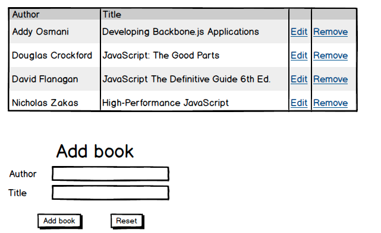
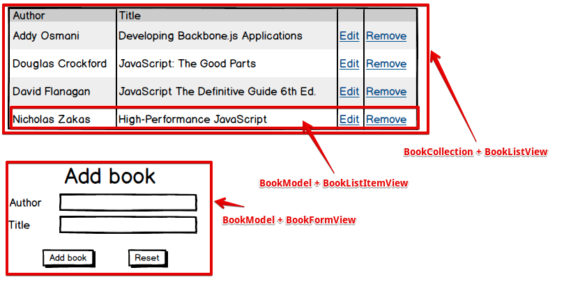

мастер-класс
Автор Константин Цареградский
Backbone.js gives structure to web applications by providing
- models with key-value binding and custom events,
- collections with a rich API of enumerable functions,
- views with declarative event handling,
and connects it all to your existing API over a RESTful JSON interface.
Немного фактов
Библиотека, а не фреймворк
Развивается с 2010 года
Open-source, MIT лицензия
Автор Jeremy Ashkenas (https://github.com/jashkenas), создатель CoffeeScript и Underscore.js
Компании и сайты, использующие Backbone
Зависимости
- Underscore.js / Lo-Dash
- jQuery / Zepto
- теоретически есть возможность использовать Backbone без этих зависимостей
Идея приложения
Вспомогательные инструменты


 Bower
Bower
Разобъем наше будущее приложение на составляющие части
Backbone & MVC pattern
Backbone.View сочитает в себе свойства как контроллера, так и представления.
По-этому обычно о Backbone говорят как о MV* (Model-View-Whatever) библиотеке.
Также иногда Backbone рассматривают как реализацию паттерна MVP.
Single-page applications (SPA)
Это веб-приложение, которое выполняется непосредственно на стороне клиента в Web-браузере, написанное на комбинации из HTML, JavaScript и CSS. При переходи с одной "страницы" приложения на другую полная перезагрузка страницы не происходит. Это позволяет увеличить "отзывчивость" приложения.
Примеры типичных SPA - Gmail, Vkontakte, Twitter, Instagram.
Для эмуляции истории в браузере используется location.hash или HTML5 History pushState.
Настройка и кастомизация
- Возможно использовать любой template engine - Handlebars, Underscore templating, Mustache, Jade etc.
- Возможно глобально переопределить функцию работы с AJAX (для REST запросов) - Backbone.ajax. Функция должна быть совместима с jQuery.ajax, если используется стандартный Backbone.sync
- Возможно глобально переопределить функцию синхронизации модели/коллекции с сервером - Backbone.sync. Таким образом можно реализовать работу с localStorage, RPC и т.д. вместо стандартного REST.
Выводы: чем хорош Backbone
- Стабильный код
- Гибкость и расширяемость - девиз "Всегда есть более одного пути сделать что-то"
- Подходит для различных применений - как для маленьких виджетов, так и для приложений энтерпрайз уровня
- Большое коммьюнити, много плагинов и расширений
- Возможность использовать только некоторые части библиотеки (например, только коллекции и модели)
- Легкая интеграция с другими популярными фреймворками (React, Knockout)
- Легко использовать с AMD
- Можно использовать любой template engine, либо не использовать вообще
Недостатки "чистого" Backbone
- Отсутвует понятие "приложения"
- Нет автоматического memory management
- Нет CollectionView
- Нет возможности работать с регионами и общим лейаутом приложения
- Нет вложенных моделей и коллекций
- Backbone.View в своей изначальной концепции - медленный
- У Backbone.View нет никакого lifecycle
Для каких приложений подходит Backbone
- Бекенд организован в виде REST-сервисов
- Предполагается большой объем логики на уровне моделей
- Необходимо интегрироваться с другими библиотеками
- Предполгается много кастомных компонентов
Полезные расширения для Backbone
Фреймворки
- Marionette - http://marionettejs.com
- Chaplin - http://chaplinjs.org
- Thorax - http://thoraxjs.org
Data-binding
- Epoxy - http://epoxyjs.org
- Backbone.Stickit - http://nytimes.github.io/backbone.stickit
- Rivets - http://rivetsjs.com
- Knockback - http://kmalakoff.github.io/knockback/
LayoutManager
- LayoutManager - http://layoutmanager.org
Backbone без jQuery и Underscore
- Exoskeleton - http://exosjs.com
- Backbone.Native - https://github.com/inkling/backbone.native
- Backbone.NativeAjax - https://github.com/akre54/Backbone.NativeAjax
- Backbone.NativeView - https://github.com/akre54/Backbone.NativeView
Вложенные модели и коллекции
- backbone-deep-model - https://github.com/powmedia/backbone-deep-model
- backbone-nestify - http://revelytix.github.io/backbone-nestify
- Backbone.Linear - https://github.com/darrrk/backbone.linear
Undo/Redo и state tracking для моделей
- Backbone.trackit - https://github.com/NYTimes/backbone.trackit
- Backbone.Undo.js - http://backbone.undojs.com
- Backbone.ActAs.Mementoable - https://github.com/iVariable/Backbone.actAs.Mementoable
- Backbone.memento - https://github.com/derickbailey/backbone.memento
Валидация моделей
- Backbone.Validation - https://github.com/thedersen/backbone.validation
- Backbone.Validator - https://github.com/toddself/Backbone.Validator
- backbone-validator - https://github.com/fantactuka/backbone-validator
Работа с различными storage
- Backbone.localStorage - http://documentup.com/jeromegn/backbone.localStorage
- backbone.couchdb.js - https://github.com/pyronicide/backbone.couchdb.js
- Backbone.ioBind - https://noveogroup.github.io/backbone.iobind
- Backbone-mongodb - https://github.com/dealancer/backbone-mongodb
Поддержка отношений между моделей
- Backbone-relational - http://backbonerelational.org
- Backbone Associations - http://dhruvaray.github.io/backbone-associations
- Backbone.Rel - https://github.com/masylum/Backbone.Rel
- ligament.js - https://github.com/dbrady/ligament.js
Pagination для коллекций
- backbone.paginator - https://github.com/backbone-paginator/backbone.paginator
- Backbone.actAs.Paginatable - https://github.com/iVariable/Backbone.actAs.Paginatable
- Backbone.SimplePaginator - https://github.com/seei/backbone.simple-paginator
Дружим Backbone и React
- backbone-react-component - https://github.com/magalhas/backbone-react-component
- react.backbone - https://github.com/clayallsopp/react.backbone
- react-backbone - https://github.com/jhudson8/react-backbone
Инструменты для разработки
- Backbone Eye (Firefox) - https://github.com/dhruvaray/spa-eye
- Backbone Debugger (Chrome) - https://github.com/Maluen/Backbone-Debugger
- Marionette Inspector (Chrome) - https://github.com/marionettejs/marionette.inspector
И десятки других плагинов и расширений на https://github.com/jashkenas/backbone/wiki/Extensions%2C-Plugins%2C-Resources
Вопросы?
Эта презентация доступна по адресу - http://tsareg.github.io/backbone-master-class-presentation
Пример приложения - https://github.com/tsareg/backbone-master-class-sample
Презентация о различных data-binding библиотеках для Backbone - http://tsareg.github.io/Data-binding-for-Backbone.js
Презентация создана с помощью Reveal.js